AI SaaS Localization Assistant
Free localization quality checker + AI JSON translation workbench + professional human translation lead capture. Two independent products, one account system.
免费本地化质量检测 + AI JSON 翻译工作台 + 母语级人工翻译需求承接。两条业务线彼此独立，共用一套账号与 AI 服务。
Landing Page
Two independent entries: free Localization Checker and paid AI Translation. Paper texture, ink rules, square corners, monospace labels.
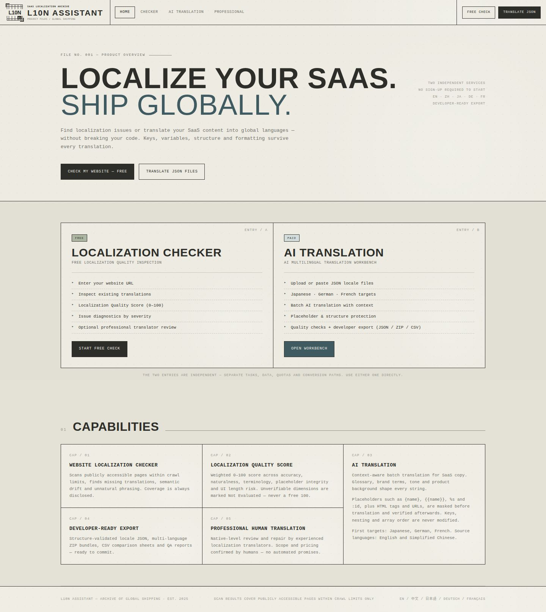
Localization Checker
URL scan / JSON audit tabs, language pickers, crawl-limit notice.
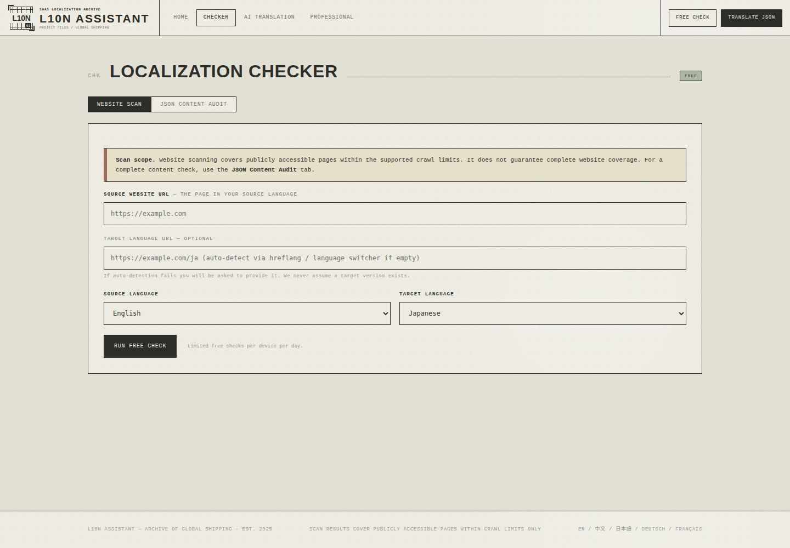
Diagnostic Report
Score 84/100, five weighted dimensions, issue distribution, 3 real examples in full, remaining issues summarised.
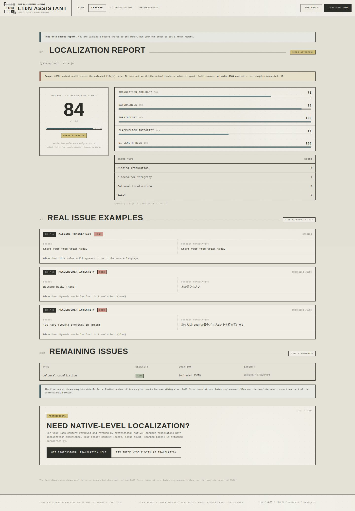
Translation Workspace
33 strings x JA/DE/FR, bilingual rows, QA flags per row, export toolbar.
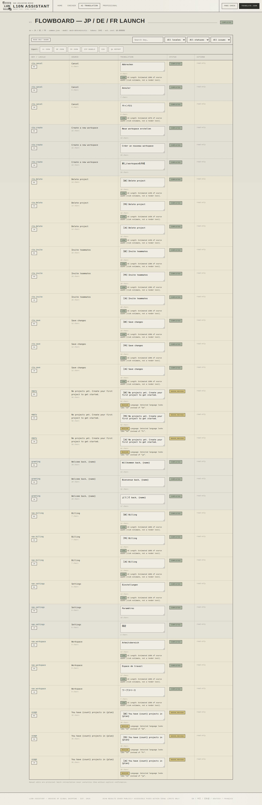
AI Translation Upload
JSON upload / paste, target languages, product context, glossary, brand terms.
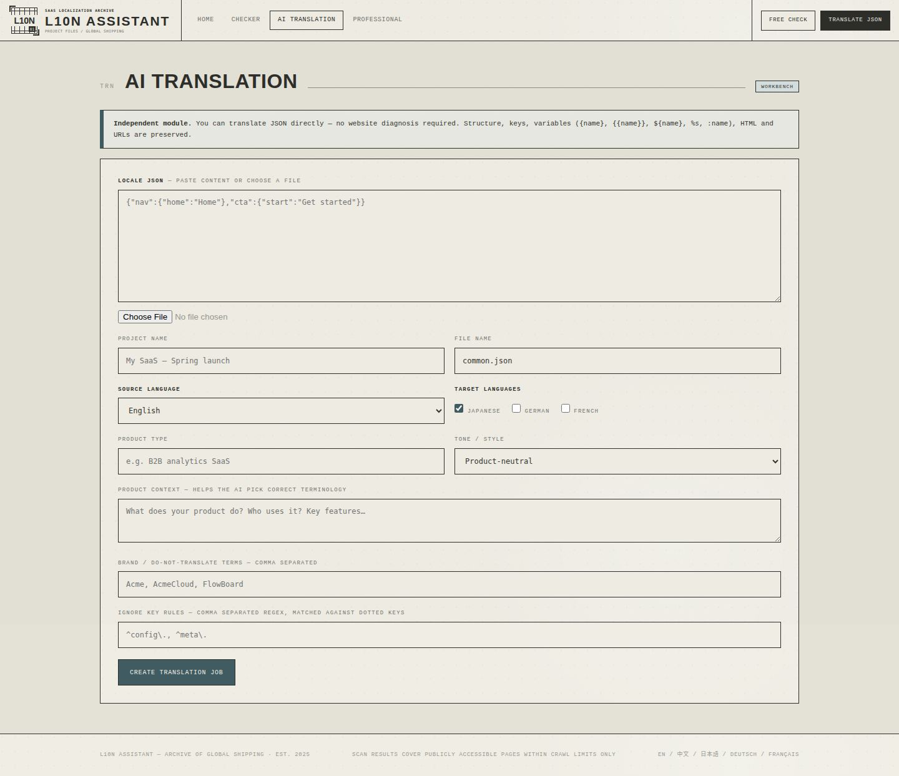
Professional Service
Lead capture form carrying audit context (score, issue count, scanned pages).
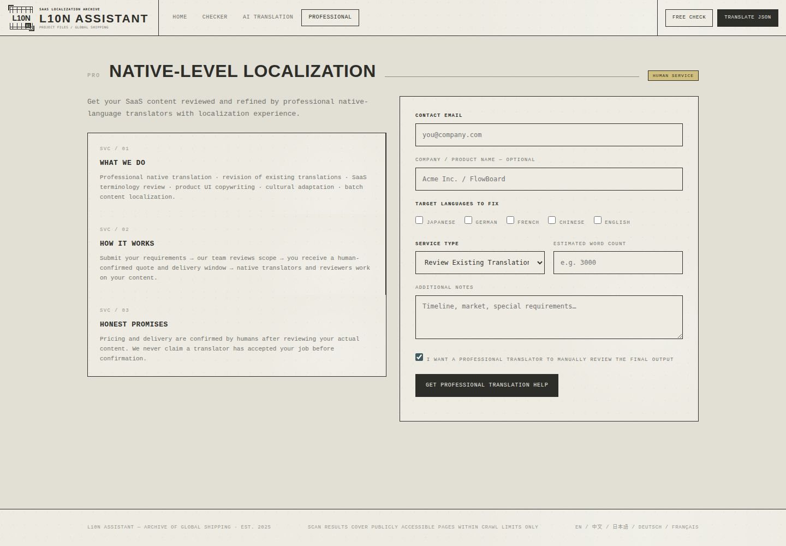
中文首页
双入口：免费本地化检测 + 付费 AI 翻译。纸质底、墨色描边、全直角、等宽标签。
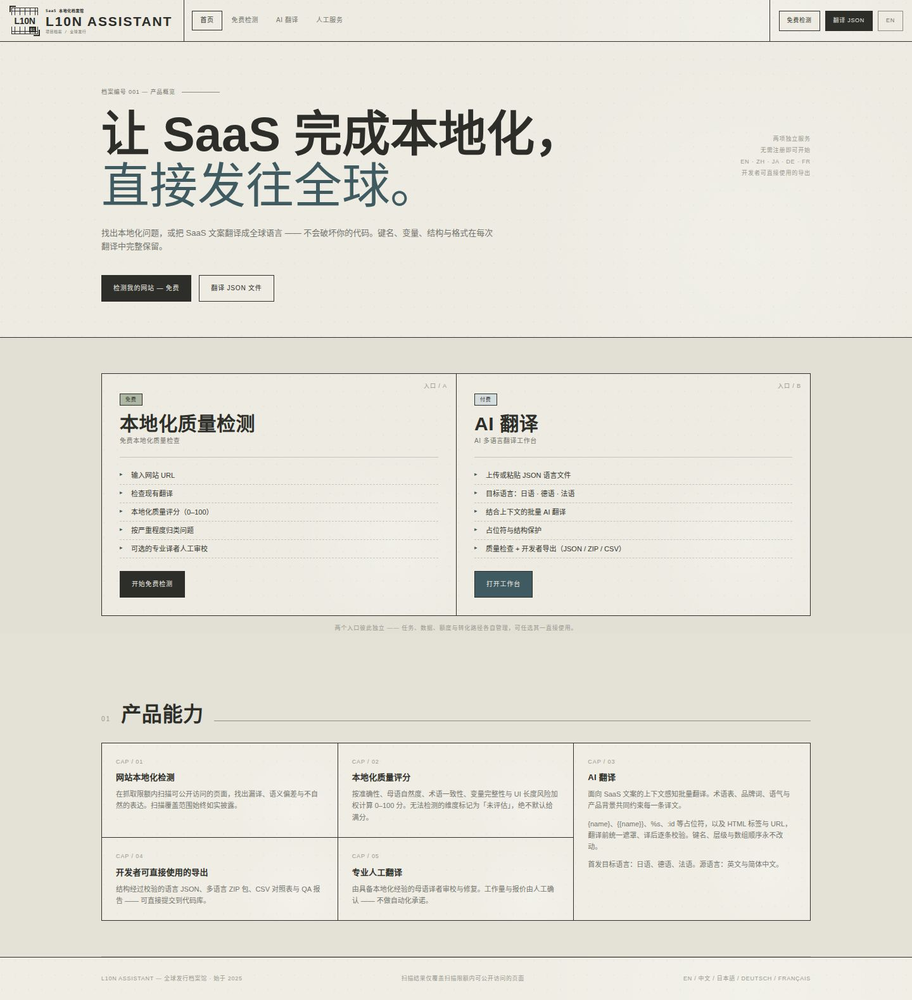
本地化检测
网站扫描 / JSON 内容审计两个标签页，语言选择，抓取限额提示。
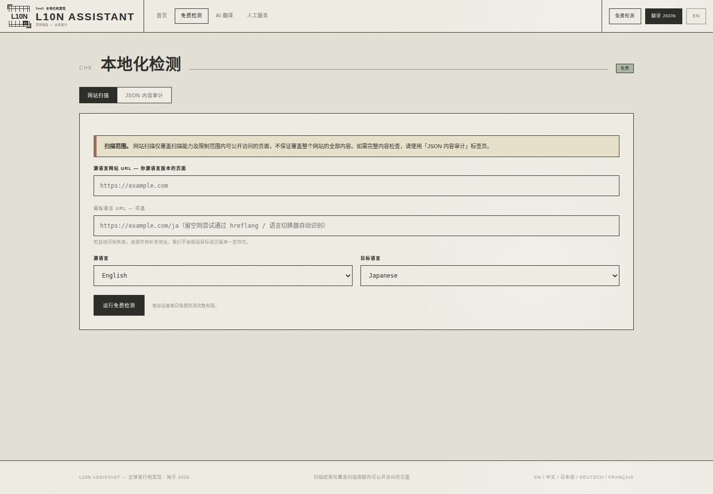
本地化诊断报告
总分 84/100，五维加权评分，问题分布，3 条真实示例完整展示，其余摘要。
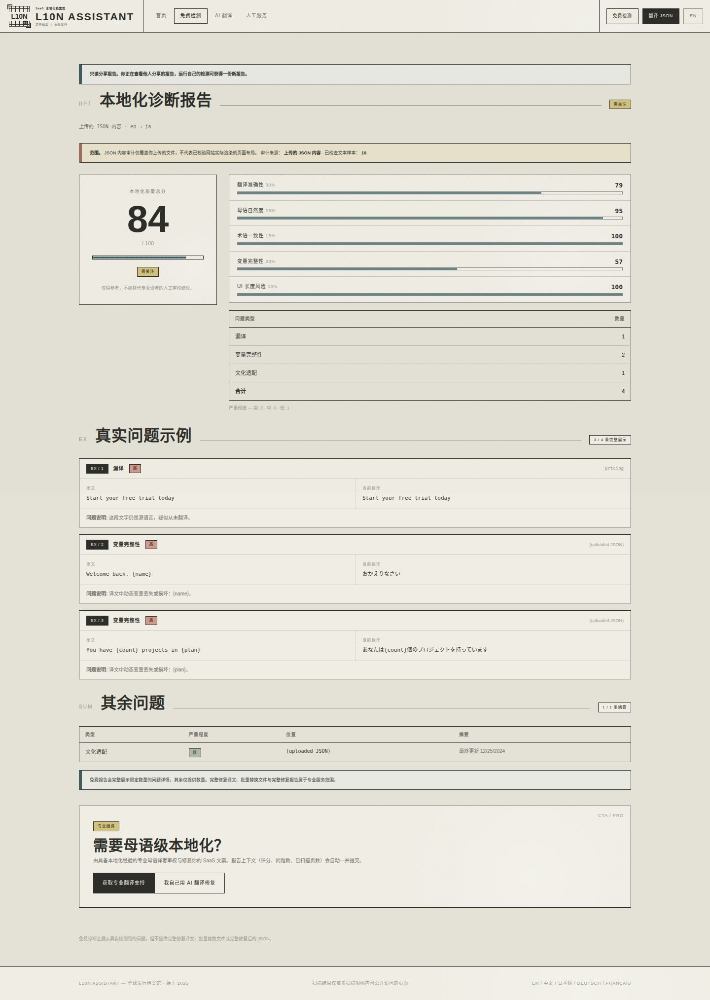
翻译工作台
33 条 × 日/德/法，双语对照行，逐行 QA 标记，导出工具条。
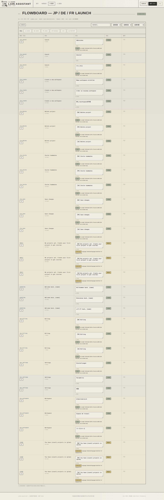
AI 翻译上传
JSON 上传/粘贴、目标语言、产品背景、术语与品牌词。
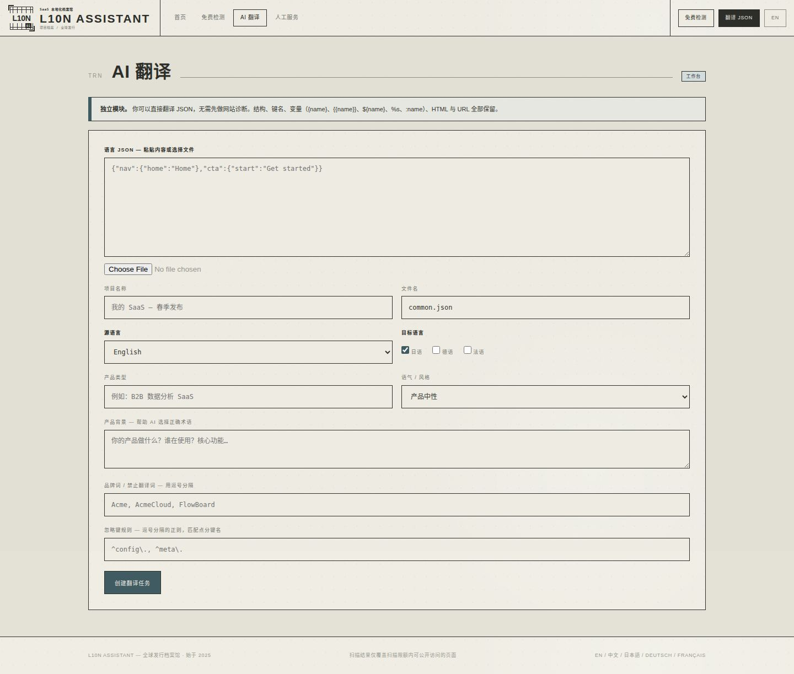
专业人工服务
需求表单，自动携带诊断上下文（评分、问题数、已扫描页数）。
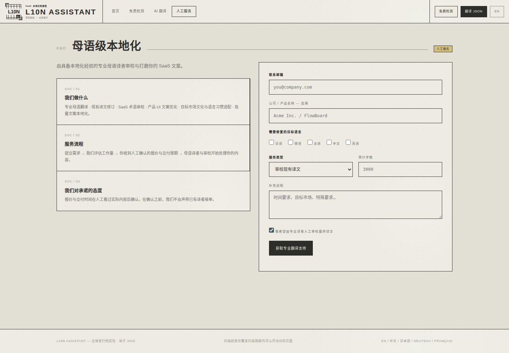
Mobile — 390px
Responsive layout: stacked header, single-column entries.
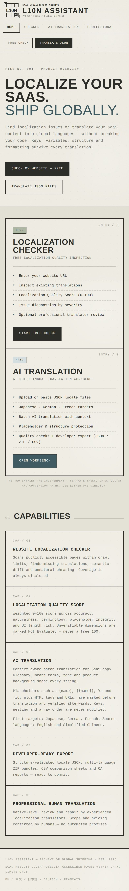
移动端 — 390px
窄屏堆叠：单列入口卡片，导航折行。
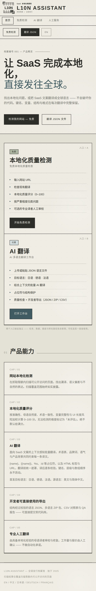